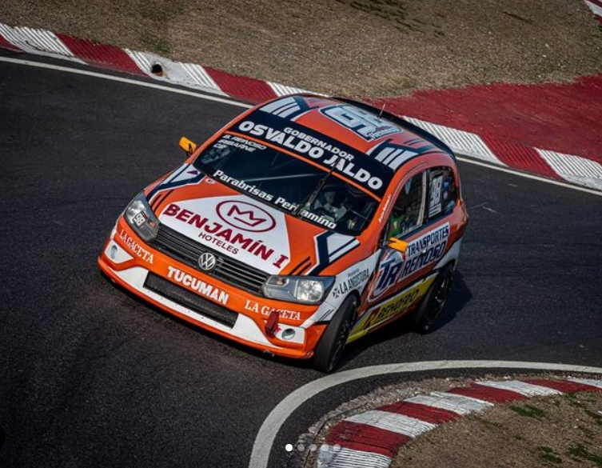
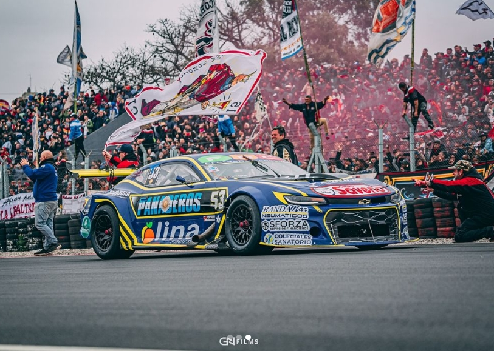
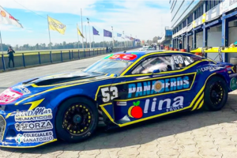

Últimas noticias
Iribarne excluido de la final del TC en San Luis
Luego de un fin de semana complicado, Federico Iribarne fue excluido de la carrera debido a que su cilindrada se encontraba fuera de los parámetros permitidos.

La primera fecha de la Copa de Oro "Río Uruguay Seguros" del Turismo Carretera en el Rosendo Hernández de San Luis dejó varias denuncias y exclusiones. Cuatro pilotos no pasaron la técnica, incluyendo a José Manuel Urcera, Facundo Ardusso, Juan Martín Trucco y Federico Iribarne.
Las exclusiones se debieron a diversas irregularidades, siendo la de Ardusso por anomalías en el múltiple de admisión, y en el caso de Iribarne y Trucco, por cilindrada fuera de los parámetros permitidos. Urcera, por su parte, no permitió la revisión de su motor.
Otras noticias
Invitado en la Clase 2 de Turismo Nacional
Federico Iribarne fue invitado por el piloto Brian Reinoso para disputar la fecha especial en el Autódromo de Buenos Aires, Juan y Oscar Gálvez.
Fin de semana complicado de TC en Buenos Aires
El auto sufrió problemas de temperatura de agua, lo que lo retrasó durante todo el fin de semana. Clasificó en el puesto 36, terminó octavo en la tercera serie y tuvo que abandonar en la final a seis vueltas del final. El piloto tomó este fin de semana como un aprendizaje.
Nuevo diseño para Federico Iribarne
Fede presentó su nuevo diseño del Chevrolet Camaro en el Autódromo de La Plata, Roberto Mouras, para la próxima fecha del TC en Buenos Aires. El coche incorpora los colores del Club Atlético Boca Juniors, reflejando su fanatismo por el club.